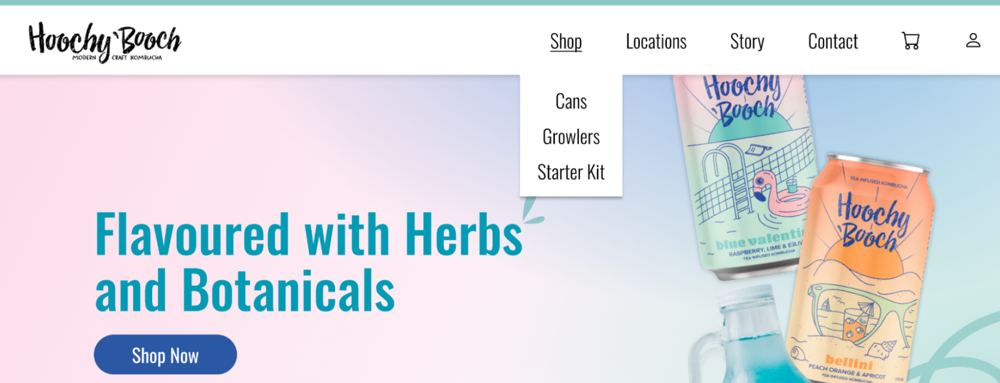

Context-Driven Filing Prototypes

Context-Driven Filing Prototypes
LandSure is a subsidiary of the Land Title and Survey Authority of BC (LTSA). LTSA is responsible for operating the land title and survey systems of BC, while LandSure develops and operates the technology that enables the LTSA to provide its services to the land and property professionals who require it.
I joined this project as the UX designer after research and meetings done by SurveyHub team determined that this feature was to be developed. I conducted interviews to understand user pain points, gave presentations to stakeholders and provided developers with annotated wireframes and prototypes as specifications.
UX Designer, Product Manager, Developer
Axure, Jira
Received well by land surveyor task force. Google Analytics showed that power users use it all the time when they fill in forms, and new users very quickly figure out how to use it resulting decrease in time spent on pages where the feature was active.
Autofill Templates is currently live for use on myLTSA.ca and SurveyHub.
Pilot users of SurveyHub forms reported that information retrieved from their myLTSA account was not always the correct information to auto-populate in the form because someone filling out a form might not always be filling it out for themselves, or they may work in different offices and require different autofill information. There was an ask from the users and a Jira ticket created for a customizable way to autofill information into forms. This is the point where I was asked to work on this project.
Speaking to the project manager and UX designer on the SurveyHub project I was able to gather important information about the users and their pain points, as well as project goals.
In a meeting with the developer, I was informed that forms on the back-end are built in “blocks” of data that make it easy for them to work with. These blocks of data were reflected in the UI of the forms as sections of form fields in a bounding box. This ended up being very important information because designing around this constraint strongly informed design choices down the line.
INSERT IMAGE OF A SECTION OF A FORM DESCRIBED ABOVE^
In doing research for different possible solutions, I came across a different piece of enterprise software called eConveyance. In this software, users can save templates for sections of a form. I used this idea as a foundation for my proposed solution.
Show a picture of eConveyancing’s template saving

Navigation Snippet of Affinity Diagram
Design and develop an account level feature for users to save templates for different blocks of form data that can be easily and quickly used to auto-populate form fields.
Pre-test survey results

Heuristic Evaluation

User Testing over Zoom

Post-test survey results
We went through different options such as giving a preview of the saved fields, nicknames. And if we had nicknames should we suggest a naming convention to make it easy to remember?
Choosing between a list or a grid layout for the "Manage Datablocks" page, required going through the pros and cons of each.
Pre-test survey results
Heuristic Evaluation
While working through the problems I had found, project requirements changed where instead of a full feature, an MVP was asked for instead because of low development capacity. Instead of working on a page to centrally manage the datablock templates within the account management of the site which would require developing a whole new webpage, I was asked to keep everything on the form page instead. I was also only required to make the BC Land Surveyor datablock work as a proof of concept which meant that I did not need to go through all of the different possible datablocks that forms could have. This required me to adapt some of my early designs. Mainly finding a way for users to manage their datablocks within the form page.
Switching from account level feature to form level feature.
Presented to SurveyHub team and stakeholders.
Load or Save and autofill template directly in the form
Load Autofill Template modal
Save Autofill Template modal
Successfully saved/loaded toast message

Load Template Specifications
Save Template Specifications
The challenge of pivoting the scope and size of the project based on changing development capacity provided an opportunity for me to develop my adaptability and problem solving skills. Ensuring the work I had already done would not be wasted and could be repurposed within the new requirements of the project.
Lesson: How if you are having issues with a lot of problems at once, if you solve one of them, or even just make a decision on something if its a close 50/50, it CAN help a lot with solving the rest of the issues. For example, when deciding between using nicknames for the templates or showing a preview, I was not really too sure because in my head, both options had its pros and cons. But I decided to go with the nicknames it also helped me decide to go with a list layout instead of a grid.
Lesson: You can help your users TOO MUCH as a designer, or at the very least, there is room for you to let your users figure it out themselves (trimmed down final version of modals)
Lesson: Learning about how the back-end works and speaking to the developers can greatly inform the best ways for you to design something.